Simulado 1
No meio do caminho
Para medir onde você está nas duas provas e ajustar o estudo enquanto ainda dá tempo.
30 dias após a compra

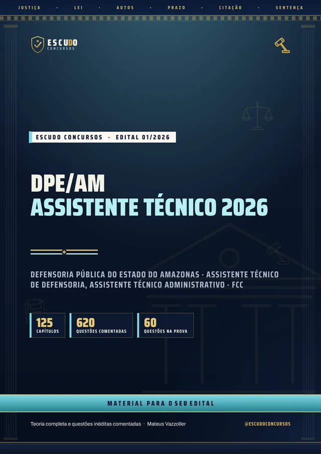
620questões
comentadas
São 60 questões da FCC, e os Conhecimentos Específicos valem dois terços da nota. O seu material cobre as seis disciplinas do edital, com as leis do Amazonas que só esta prova cobra? Curso feito a partir do Edital nº 01/2026, item por item, com questões de A a E no padrão da FCC e gabarito comentado.
De acordo com o Edital nº 01/2026 · FCC
de R$ 47 por 21% OFF
R$37
com o cupom DPEAM37 até 31/12/2026. Pelo botão, o cupom já vai preenchido.
R$47
Curso completo, com acesso imediato.
Grátis, sem cadastro para começar
20 questões no estilo da banca, com nota na hora por disciplina. O gabarito comentado sai depois de informar o e-mail.
Resposta rápida
Assistente Técnico Administrativo da DPE-AM, nível médio, R$ 4.713,02 e taxa de R$ 100,00. Banca: FCC, Edital nº 01/2026 (DOE da DPE-AM de 30/10/2026). Uma vaga imediata em Manacapuru e cadastro de reserva em 12 polos do interior; Manaus não tem vaga para este cargo. Inscrições das 10h de 30/11/2026 às 23h59 de 04/01/2027. Prova objetiva única em 07/03/2027, de manhã: 60 questões de A a E, 20 de Conhecimentos Gerais (peso 1) e 40 de Conhecimentos Específicos (peso 2). Habilita quem tiver nota final igual ou superior a 6,00.
Leia o guia completo do concurso: vagas, salário, prova e o que cai
O concurso
O Edital nº 01/2026 do VI Concurso para os Servidores Auxiliares da Defensoria Pública do Estado do Amazonas, publicado no Diário Oficial da DPE-AM de 30/10/2026, oferece 1 vaga imediata, em Manacapuru, e cadastro de reserva nos polos do interior para Assistente Técnico de Defensoria, Assistente Técnico Administrativo, com remuneração inicial de R$ 4.713,02. O cargo exige ensino médio completo. As inscrições vão de 30 de novembro de 2026 a 4 de janeiro de 2027, com taxa de R$ 100,00.
A prova da Fundação Carlos Chagas (FCC) é em 7 de março de 2027, pela manhã, na cidade-sede do polo escolhido: 60 questões de 5 alternativas, de (A) a (E), em 3 horas. Não há redação para este cargo. A nota é a média ponderada de duas provas, Conhecimentos Gerais com peso 1 e Conhecimentos Específicos com peso 2.
Quem tirar 6,00 na média ponderada está habilitado, sem nota mínima por prova. Isso dá 36 acertos em 60 questões, em qualquer combinação, e as 40 questões de Específicos valem o dobro: neste concurso, toda questão vale o mesmo na nota final.
| Prova | Disciplinas | Questões |
|---|---|---|
| I | Conhecimentos Gerais: Língua Portuguesa, Legislação da Defensoria e Conhecimentos Jurídicos e Institucionais (peso 1) | 20 |
| II | Conhecimentos Específicos: Noções de Direito Administrativo, Noções de Direito Constitucional e Noções de Administração (peso 2) | 40 |
| Cada prova vale de 0 a 10. Nota final = (Gerais + 2 x Específicos) / 3, habilitação com 6,00. | 60 |
O formato
Você estuda lendo, no seu ritmo, pela área de membros da Hotmart ou com os arquivos baixados. O curso foi feito a partir do Edital nº 01/2026, item por item, na ordem do Anexo II para Assistente Técnico Administrativo, com a legislação, as súmulas e a jurisprudência consideradas até a data da publicação do edital (30/10/2026), como o item 13.2 manda.
Páginas reais do PDF
Toque numa página para ver em tamanho maior.
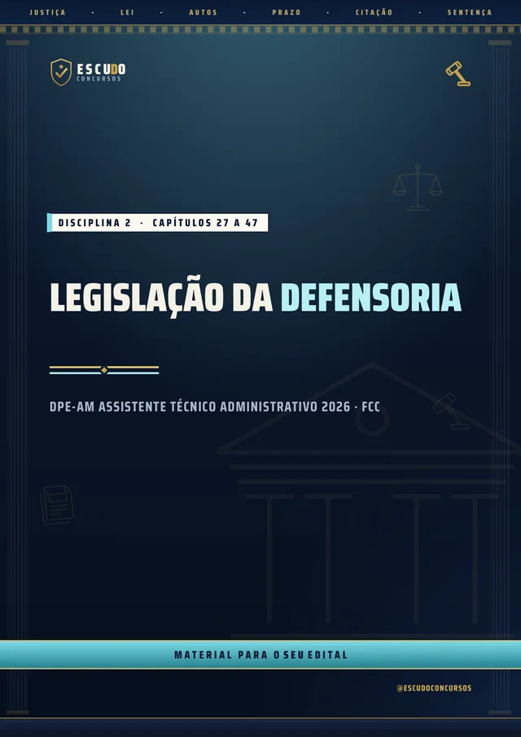
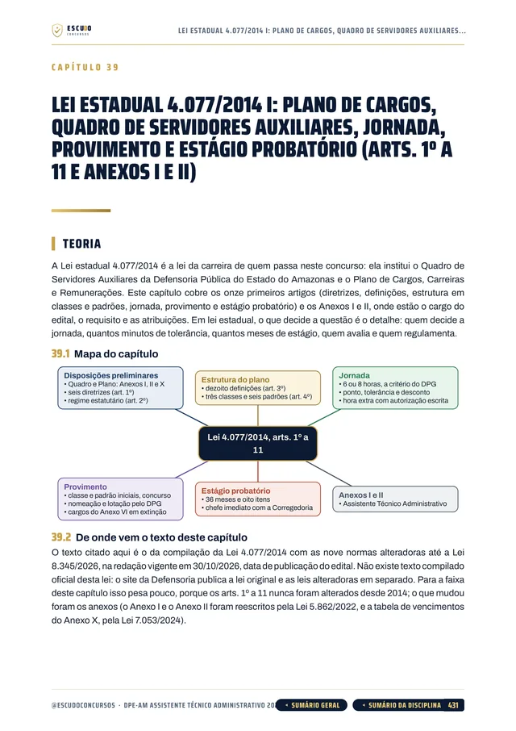
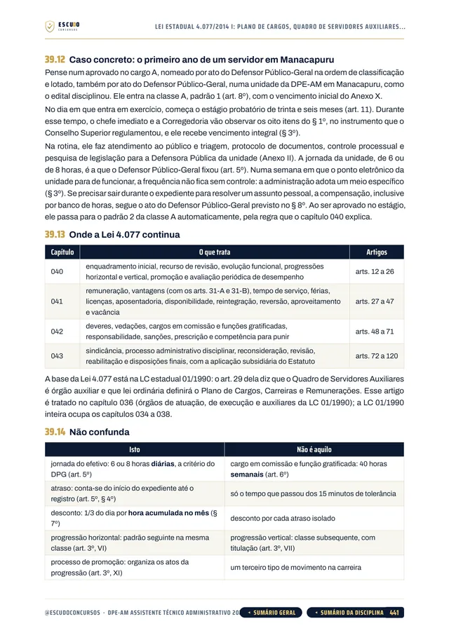
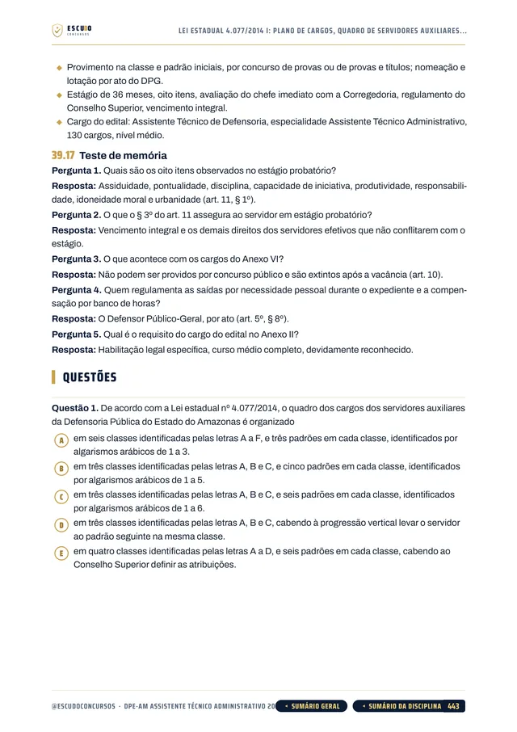
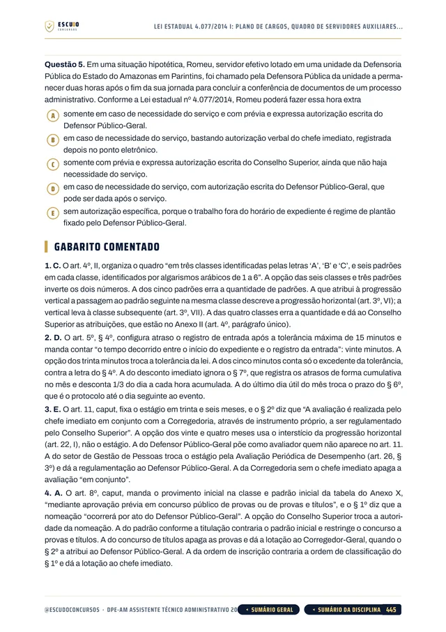
100% em PDF · Garantia de 7 dias · Pagamento pela Hotmart
O que você recebe
Curso em PDF organizado em módulos pelas disciplinas do edital, com 1.488 páginas no padrão visual ESCUDO, para ler no computador, no tablet, no celular ou no app da Hotmart. Não há videoaulas.
125 capítulos cobrindo as seis disciplinas da prova: Língua Portuguesa (25 capítulos), Legislação da Defensoria (21), Conhecimentos Jurídicos e Institucionais (15), Noções de Direito Administrativo (24), Noções de Direito Constitucional (20) e Noções de Administração (19), mais um capítulo de abertura sobre a prova e o plano de estudo.
620 questões inéditas com 5 alternativas, de (A) a (E), no padrão da FCC, todas com gabarito comentado: por que a correta está correta e onde está o erro de cada uma das outras.
Legislação da Defensoria em 21 capítulos: art. 134 da Constituição Federal, Lei Complementar nº 80/1994, Constituição do Amazonas, Lei Complementar estadual nº 01/1990, Lei estadual nº 4.077/2014 (o plano de cargos do seu cargo), Lei estadual nº 1.762/1986 e Regimento Interno da DPE-AM, na redação vigente em 30/10/2026.
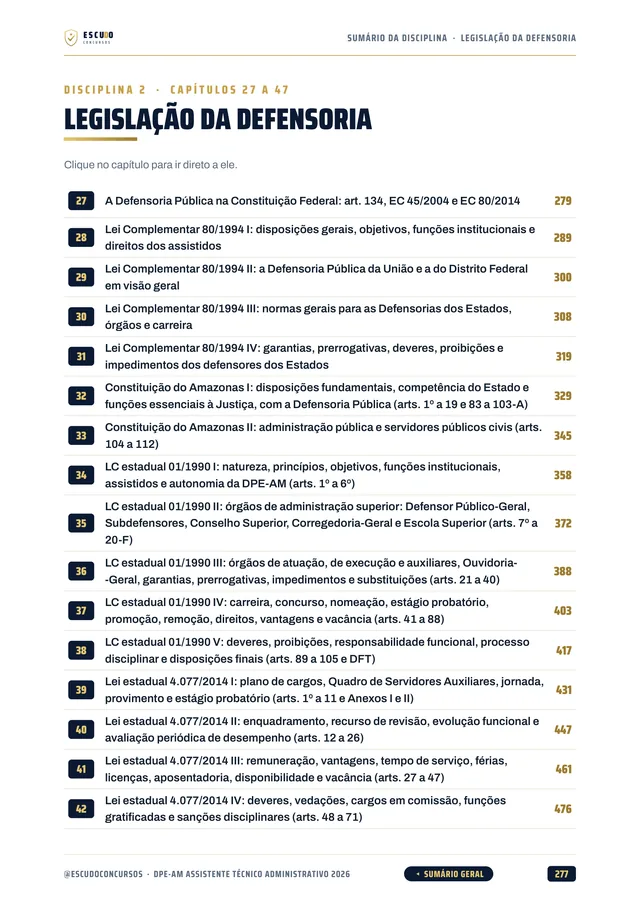
Os Conhecimentos Específicos, que pesam o dobro, em 63 capítulos: Direito Administrativo com a Lei 14.133/2021 (licitações e contratos), Direito Constitucional com a EC 141/2026 e Administração com governança, orçamento, projetos e administração de materiais.
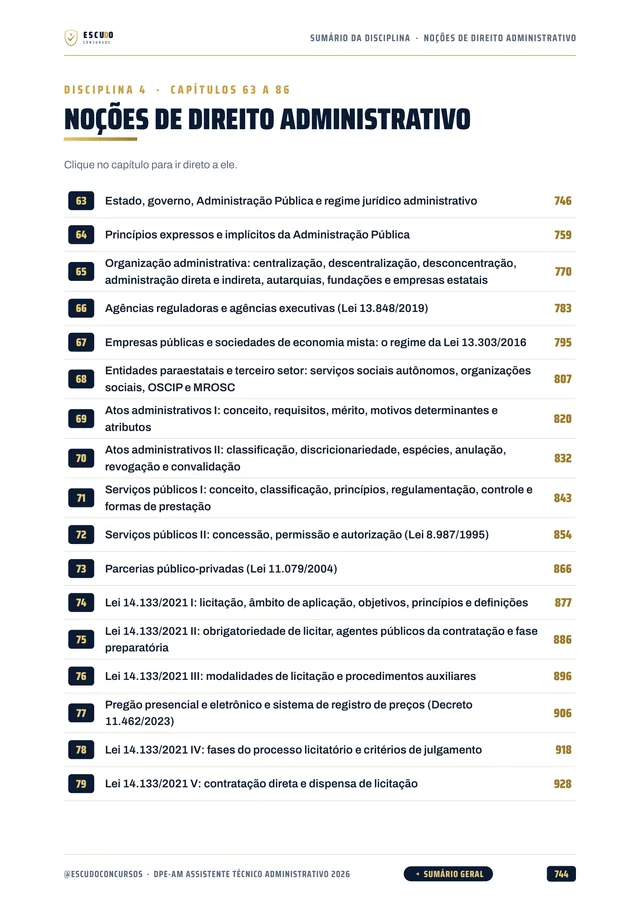
Teoria com recursos para memorizar: mapa de cada capítulo, lei transcrita onde o número ou a palavra decide a questão, casos concretos da rotina da DPE-AM, quadros de "pegadinha" e "não confunda", revisão relâmpago e teste de memória no fim de cada capítulo.
Navegação clicável: do sumário você vai direto ao capítulo, e volta pelo botão do rodapé.
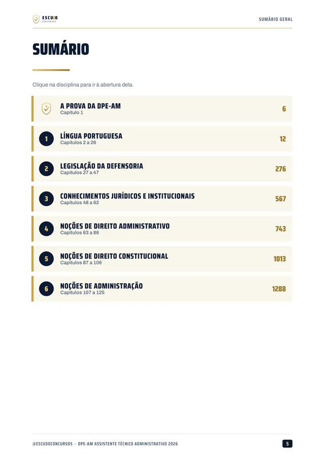
2 simulados inéditos no formato exato da prova (60 questões de A a E, 20 de Gerais e 40 de Específicos), cada um com caderno de comentários. O Simulado 2 é liberado em 28/02/2027, na semana anterior à prova, para o seu último teste.
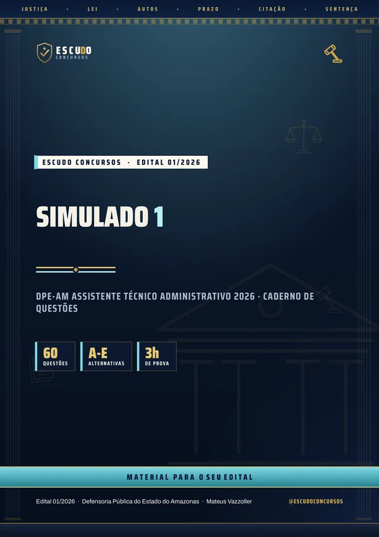
Área de membros
| Módulo | Conteúdo | Liberação |
|---|---|---|
| M0 Comece aqui | Apresentação + capítulo 001 (como é a prova e como usar o curso). Bônus: PDF completo para baixar e imprimir | Na compra; o PDF completo no 8º dia |
| M1 Língua Portuguesa I | Capítulos 002 a 009 | Na compra |
| M2 Língua Portuguesa II | Capítulos 010 a 017 | Na compra |
| M3 Língua Portuguesa III | Capítulos 018 a 026 | Na compra |
| M4 Legislação da Defensoria I | Capítulos 027 a 031 | Na compra |
| M5 Legislação da Defensoria II | Capítulos 032 a 038 | Na compra |
| M6 Legislação da Defensoria III | Capítulos 039 a 043 | Na compra |
| M7 Legislação da Defensoria IV | Capítulos 044 a 047 | Na compra |
| M8 Conhecimentos Jurídicos e Institucionais I | Capítulos 048 a 055 | Na compra |
| M9 Conhecimentos Jurídicos e Institucionais II | Capítulos 056 a 062 | Na compra |
| M10 Direito Administrativo I | Capítulos 063 a 068 | Na compra |
| M11 Direito Administrativo II | Capítulos 069 a 073 | Na compra |
| M12 Direito Administrativo III | Capítulos 074 a 079 | Na compra |
| M13 Direito Administrativo IV | Capítulos 080 a 086 | Na compra |
| M14 Direito Constitucional I | Capítulos 087 a 092 | Na compra |
| M15 Direito Constitucional II | Capítulos 093 a 098 | Na compra |
| M16 Direito Constitucional III | Capítulos 099 a 106 | Na compra |
| M17 Noções de Administração I | Capítulos 107 a 112 | Na compra |
| M18 Noções de Administração II | Capítulos 113 a 118 | Na compra |
| M19 Noções de Administração III | Capítulos 119 a 125 | Na compra |
| M20 Simulado 1 | 60 questões, caderno de comentários | 30 dias após a compra |
| M21 Simulado 2 | 60 questões, caderno de comentários | 28/02/2027 (7 dias antes da prova) |
Treino no formato da prova
Cada simulado tem 60 questões de A a E, 20 de Conhecimentos Gerais e 40 de Específicos, no formato exato da prova, com caderno de comentários.
Simulado 1
Para medir onde você está nas duas provas e ajustar o estudo enquanto ainda dá tempo.
30 dias após a compra
Simulado 2
Liberado na semana anterior à prova de 07/03/2027.
28/02/2027
Para quem é
Para quem vai prestar Assistente Técnico Administrativo da DPE-AM em 07/03/2027 e quer estudar pelo programa do edital, com a Legislação da Defensoria, incluindo as leis do Amazonas, e os Conhecimentos Específicos, que valem dois terços da nota, cobertos por inteiro.
Você tem 7 dias de garantia pela Hotmart. Se não for o que você esperava, pede o reembolso pela própria Hotmart, dentro do prazo.
Sem surpresa na área de membros
Na compra: todas as disciplinas em PDF, uma por módulo, com a teoria e as questões comentadas. É o curso inteiro, para começar a estudar no mesmo dia.
8 dias após a compra: o PDF completo para imprimir. É o mesmo conteúdo dos módulos num arquivo só, liberado depois da garantia de 7 dias.
Simulado 1: 30 dias após a compra, para medir onde você está no meio da preparação.
Simulado 2: em 28/02/2027, 7 dias antes da prova, para o último teste.
O PDF completo e os simulados aparecem bloqueados na área de membros até a data de cada um: não é conteúdo faltando, é a liberação programada.
Dúvidas
Não. É um curso 100% em PDF: teoria, questões comentadas e simulados para ler e resolver.
O acesso é imediato depois da confirmação do pagamento, pela área de membros da Hotmart (web ou app). O PDF completo para baixar e imprimir é liberado no 8º dia.
O Simulado 1 é liberado 30 dias após a compra. O Simulado 2 é liberado em 28/02/2027, uma semana antes da prova.
Cada prova vale de 0 a 10. A nota final é a média ponderada: Conhecimentos Gerais (20 questões) com peso 1 e Conhecimentos Específicos (40 questões) com peso 2. Quem tira 6,00 está habilitado, sem nota mínima por prova, o que equivale a 36 acertos em 60. O capítulo 001 explica a estratégia.
Não para este cargo: a prova é só objetiva. Os capítulos de Língua Portuguesa cobrem o que a FCC cobra nas questões do programa.
Sim. A Legislação da Defensoria traz a Constituição do Amazonas, a Lei Complementar estadual nº 01/1990, a Lei estadual nº 4.077/2014, a Lei estadual nº 1.762/1986 e o Regimento Interno da DPE-AM, na redação vigente em 30/10/2026, data de publicação do edital.
Não. O Anexo II do edital não cobra essas disciplinas para este cargo, e o curso segue o edital: são seis disciplinas, três de Gerais e três de Específicos.
Não como curso completo. Este curso é para Assistente Técnico de Defensoria, Assistente Técnico Administrativo (cargo A, nível médio). Os outros cargos têm programa próprio.
Não. As 620 questões de treino e as dos simulados são inéditas, escritas no padrão da FCC a partir do conteúdo programático do edital.
Você tem 7 dias de garantia pela Hotmart. Se não for o que você esperava, pede o reembolso.
DPE/AM 2026 · Assistente Técnico Administrativo
de R$ 47 por 21% OFF
R$37
com o cupom DPEAM37 até 31/12/2026.
R$47
Curso completo, com acesso imediato.
Material para o SEU edital. ESCUDO Concursos.
Continue estudando
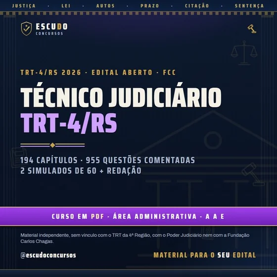
TRT-4/RS 2026 · FCCTécnico Judiciário do TRT-4, Área Administrativa DPE-PB 2026 · FCCTécnico da Defensoria Pública da Paraíba
DPE-PB 2026 · FCCTécnico da Defensoria Pública da Paraíba TJSP 2026 · VunespEscrevente Técnico Judiciário do TJSP
TJSP 2026 · VunespEscrevente Técnico Judiciário do TJSPGuia do concurso: edital, vagas e o que cai · Ver todos: concursos de tribunais